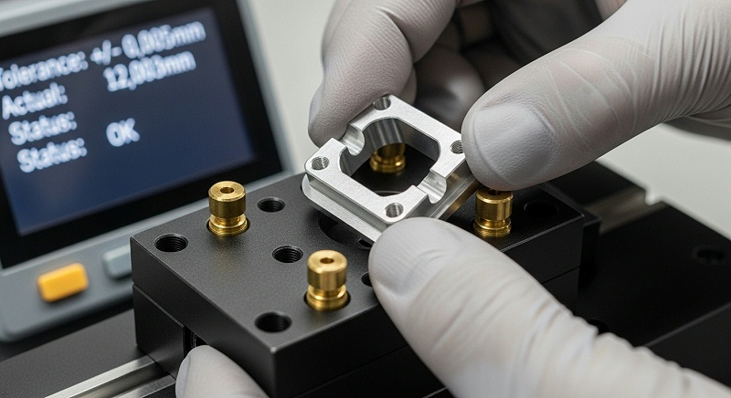
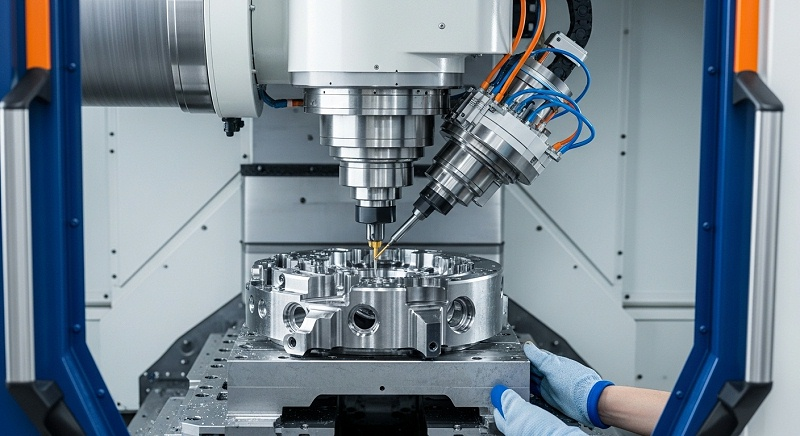
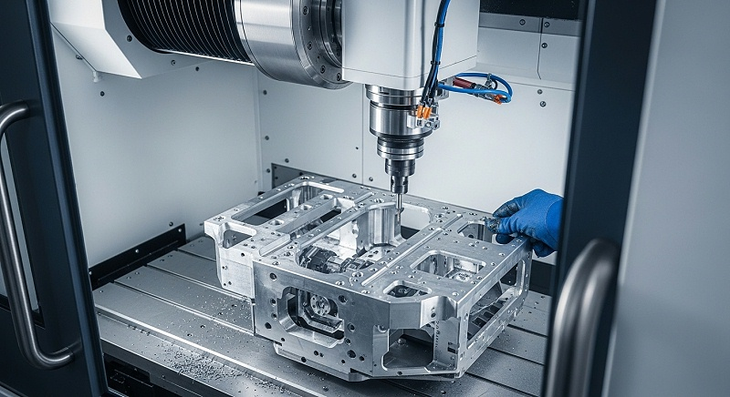
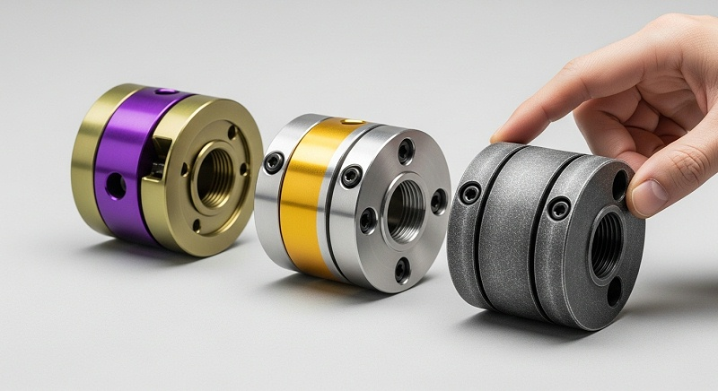
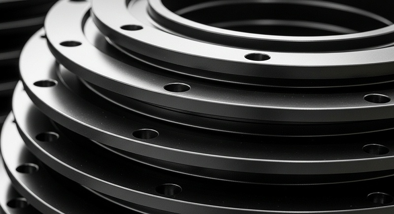

工业相机深腔CNC加工，180台设备保障批量稳定交付
负责供应商开发与项目打样采购的人员在评估工业相机深腔CNC加工方案时，需要确认同类案例、关键参数和交付风险是否能匹配当前项目的实际需求。伟创业cnc加工在对接这类需求时发现，工业相机结构件里的深腔特征往往集中在镜头安装座、主体支撑框和内部屏蔽槽这几处，而深腔带来的真正麻烦不是刀具够不够长，而是切削状态看不见、排屑不顺畅、刀具震颤难控制，再加上批量加工时腔底尺寸和侧壁一致性容易漂移。
选供应商如果只盯着报价和交期，忽略深腔工艺的验证深度，很容易在试制阶段反复改刀路、换刀具，等项目推到装配环节才发现腔底平面度超差或者侧壁接刀痕明显，那时候再回头调工艺，延期和成本失控就都来了。
伟创业cnc加工在对接深圳及周边工业相机项目时，经常遇到客户问起同类问题：深腔能做到什么程度，批量能不能稳住。这个问题其实要拆开看——深腔能加工到什么程度，取决于机床行程、刀具刚性和编程策略；
批量能不能稳住，取决于首件验证是否彻底、过程检测频次是否合理、风险点有没有被提前锁定。下面围绕深腔铣削工艺控制和批量一致性保障这两个维度，展开实际判断标准和验证方法。
工业相机深腔结构为什么容易在试制和批量阶段出问题
深腔加工的风险不会在重点次走刀时暴露，它藏在切削过程的累积效应里。腔体越深，刀具悬伸越长，切削时刀具变形量越大，腔底和侧壁的尺寸偏差就越不容易控制。尤其是工业相机这类产品，腔体内往往要装配镜头模组、滤光片和电路板，几级台阶和定位面的公差都卡在微米级别，任何一个深腔位置的尺寸超差，都可能让后续装配出现干涉或者成像位置偏移。
更隐蔽的问题是排屑。深腔铣削时，铝屑和不锈钢屑不容易从狭窄的槽腔里顺利排出，碎屑堆积在腔底反复被刀具碾压，轻则划伤已加工表面，重则引起刀具崩刃甚至断刀。
伟创业cnc加工在评审这类图纸时，重点看的就是腔深比和最小槽宽，判断现有刀具规格和冷却方式能不能覆盖。如果腔深超过常规刀具的稳定加工范围，工程团队会直接提出分段加工方案或者定制加长刀具，这就需要在报价阶段提前沟通，而不是等程序编完再改。
另一个容易被低估的风险是薄壁位置的让刀。工业相机结构件为了减重，侧面往往设计得比较薄，深腔加工到接近最终尺寸时，侧壁在切削力作用下会发生弹性让刀，导致实际铣削量比设定值少，松开夹具后侧壁回弹，尺寸反而偏大。
这种问题在单件试制时不容易察觉，到了批量环节，材料批次硬度波动和刀具磨损叠加，让刀量会变得不稳定，产品尺寸分布就会散开。
材料特性也会影响深腔加工的难度。铝合金6061和7075的切削性能差异明显，7075硬度更高，深腔加工时刀具磨损更快，表面质量更难控制；不锈钢深腔则要面对粘刀和加工硬化的问题。
伟创业cnc加工在备料阶段就会确认材料牌号和硬度要求，这批料是铝板还是型材、硬度范围多少、是否需要去应力处理，这些信息直接决定开粗余量、切削参数和刀具寿命的设定。
[

客户如果只提供3D图档而没有明确材料状态，工程团队通常会在工艺评审时先提出来，避免后续因为材料批次差异导致加工效果不稳定。
模具钢材与深腔加工的关系同样需要提前判断。部分工业相机外壳会涉及模具钢镶件或加强筋结构，硬度高、粘刀风险大，对刀具涂层和冷却方式的要求不同于常规铝合金。
伟创业cnc加工在评审这类图纸时会单独标注材料组别，确认是否需要更换刀具牌号或调整精加工余量，而不是用同一套参数直接套用。
深腔铣削工艺控制要先验刀具路径和切削参数，再谈批量产能
深腔加工的能力边界，本质上由刀具系统、切削参数和路径策略三者共同决定。伟创业cnc加工在评审工业相机深腔件时，会先做刀具可达性分析：腔底圆角半径决定刀具直径上限，最小槽宽决定刀具直径下限，腔深决定需要的刀具悬伸长度。这三组数字放到一起，才能判断是一个常规三轴程序就能完成，还是需要动用多轴联动或者特殊的摆线铣削策略。
刀具路径的安排对深腔质量影响很大。传统等高加工在深腔侧壁容易留下接刀痕迹，尤其是当刀具磨损后，每次下刀的接触状态变化会让表面纹路不一致。伟创业cnc加工的编程团队在深腔区域通常采用螺旋等高结合分层清角的策略，让刀具始终保持相对稳定的切削角度，减少径向切削力的突变。开粗阶段先做大余量快速去除，留出均匀的余量给半精加工；
半精加工和精加工分开走，精加工时每层切深控制在较小范围，降低刀具振动对腔底和侧壁的扰动。
切削参数不能只靠经验值，需要结合具体的刀具悬伸长度来校核。同样一把直径6毫米的铣刀，悬伸20毫米和悬伸40毫米时的刚性完全不同，能承受的切深和进给也不一样。
伟创业cnc加工在工艺文件里会标明每把刀具的有效加工深度范围和对应的转速、进给、切深建议值，操作员按参数执行，减少现场随意调整带来的波动。
冷却和排屑策略同样是深腔加工的变量。常规的切削液外部冲水在深腔底部往往起不到效果，切削液喷不到切削区域，热量和碎屑都排不出来。伟创业cnc加工会根据腔深选择使用高压内冷刀具或者加装延长喷嘴，必要时在编程中加入啄式排屑动作，让刀具定期抬离切削区，利用切削液压力把碎屑冲出腔体。
这个动作看起来简单，却是减少深腔表面划伤和刀具异常磨损的关键。
验证阶段至少要跑完一轮首件全流程。程序编好后先做空跑和模拟仿真，检查刀具路径有没有过切、碰撞和抬刀不合理的风险；确认路径安全后再上机加工首件。首件出来后不急着送检所有尺寸，而是先由内部品质人员做一次快速测量，重点确认深腔关键位置是否有明显偏差或表面异常。
[

如果关键尺寸稳定，再送全尺寸检测并做装配验证。伟创业cnc加工在首件验证启动前会与客户确认一个明确的时间窗口，避免因为等待图纸更新或材料确认而挤压后续批量交付的周期。
大批量生产视角下，单件工艺稳定不等于批次交付可靠
样品做得好，不代表批量能按时交付。工业相机深腔件一旦进入量产，每天要面对的是几十件甚至上百件同样结构的加工循环，这时候真正的风险变成了过程波动和排产约束。
伟创业cnc加工在评估批量加工项目时，通常会和客户确认几个关键数字：单件加工节拍是多少、同一张订单计划分几批交付、每批数量多少、关键尺寸的检测是全检还是抽检，这些数字决定了产能负荷的安排和质量的保障方式。
批量加工中常见的问题之一是刀具寿命波动带来的尺寸漂移。深腔加工刀具磨损速度比浅腔快，尤其是精加工刀具，磨损到一定程度后侧壁尺寸会逐渐偏大，腔底表面粗糙度也会变差。
伟创业cnc加工的质量控制流程会在加工过程中设定刀具寿命管理点，操作员按规定的加工数量或时间更换刀具，而不是等尺寸超差了再去补救。刀具更换时同步做一次关键尺寸的抽检，确认换刀后的状态与前面批次一致。
毛坯来料的一致性对批量交付影响也很大。工业相机零件多采用铝板或铝型材加工，材料批次不同，硬度和内部应力状态会有差异。伟创业cnc加工在批量备料时会对每一批来料做硬度抽检和外观检查，发现硬度波动超出合理范围时，会先调整切削参数或通知客户确认，避免整批零件在深腔加工阶段出现不明原因的尺寸变化。
批量生产还需要提前规划产能，深腔加工单个零件的工时通常比普通结构件长，同样一台机床一天能产出的零件数量更少。伟创业cnc加工接单时会把深腔件的单件节拍、每月订单总量和现有产线负荷放到一起核算，如果客户交付节奏紧凑，可能需要安排两班倒或者在光明主厂和中山分厂之间做产能协同。
这些排产细节如果在合同签订前没有算清楚，到了交付高峰月份就容易出现设备忙不过来或者某个瓶颈工序积压的被动局面。
外协节点的控制同样会左右最终交付时间。工业相机深腔件的表面处理如果涉及阳极氧化或喷砂，通常需要外发到专业表面处理厂。伟创业cnc加工在安排计划时会把表面处理工序的周期和物流时间一并排入进度表，外发前确认工件的表面状态和批次标识，收回后做外观和膜厚抽检，帮助保障表面处理没有掩盖或改变关键尺寸。
材料批次更换时，外协厂对前处理工艺的适配能力也需要同步确认，避免因为来料状态变化导致表面处理后的尺寸出现系统性偏差。任何一个外协环节脱节，都可能让原本按时的交付计划往后拖延。
[

关键尺寸与检测方法要按深腔特性逐项确认，CTQ分析先行
工业相机深腔件的关键尺寸不能简单套用常规机加工件的检测清单。常规件测外形尺寸和孔位公差就够了，深腔件还要额外关注腔底到基准面的深度尺寸、侧壁的垂直度、腔体内部的台阶定位面平面度，以及深腔底面与外侧基准之间的位置关系。
伟创业cnc加工在工艺评审阶段会先做CTQ特性分析，和客户一起确认哪些尺寸影响装配、哪些尺寸影响成像位置、哪些尺寸即使有小幅偏差也不影响功能。CTQ列清楚之后，检测方案和过程控制才有依据。
检测手段也需要分区考虑。外形尺寸和容易接触到的位置可以用三坐标测量机做全尺寸检测，但深腔底部的尺寸往往普通测头很难触及，或者因为测量角度受限导致重复性差。伟创业cnc加工的做法是尽量在编程时就预留测量基准，让测头能够以直线路径进入腔体；
如果几何条件实在不允许直接测量，就需要客户确认改用间接测量方法，比如通过测量腔口基准面结合刀具补偿值来推算深度，或者制作专用检具来验证装配效果。
表面质量在深腔件上的检查同样要有标准。深腔侧壁的刀具纹路方向和均匀性，腔底是否存在接刀台阶或细微振纹，这些用肉眼有时很难判断，需要用表面粗糙度仪在固定位置测Ra值，并和首件确认的样件做对比。
伟创业cnc加工的品质人员在批量巡检时不会只看报表上的数字，而是定期从在制品中抽拿实际零件做手感对比和目视确认，因为有些表面异常只有面对面检查才能看出来。
首件检验是批量交付前最重要的一道关卡。伟创业cnc加工在首件检验完成后，会出具一份完整的首件检测报告，包含所有关键尺寸的实测值、测量方法和对应的图纸公差，同时附上深腔关键位置的图片记录。客户确认首件合格后，批量生产才开始启动。
这个流程看上去会增加一点前期时间，但能有效避免整批零件做完才发现深腔尺寸系统性偏差的情况。
针对工业相机深腔件的常见检测项和判断逻辑，以下是一个可参考的核验表：
| 判断对象 | 关键问题 | 我们采取的动作 | 所需证据 | 风险信号 |
|---|---|---|---|---|
| 腔底深度尺寸 | 是否在公差范围内且测量重复性好 | 三坐标测量结合专用检具比对，关键深度逐件确认 | 深度实测值与公差对照记录 | 不同测量方法结果差异大于公差30% |
| 侧壁垂直度 | 深腔侧壁是否存在倾斜或让刀 | 编程分段加工控制让刀量，精加工用小切深 | 垂直度检测报告与首件对比记录 | 深腔越深尺寸偏差越明显 |
| 刀具磨损状态 | 精加工刀具是否影响批量尺寸稳定 | 设定刀具寿命管理点，定期抽检关键尺寸 | 换刀记录和对应批次抽检数据 | 批次末尾零件尺寸较批次开头偏大 |
| 表面纹路一致性 | 深腔侧壁是否存在振纹或接刀痕 | 定期目视检查与粗糙度抽测结合 | 粗糙度实测记录和外观图片 | 材料批次更换后表面纹路明显变化 |
| 毛坯硬度波动 | 材料批次差异是否影响加工效果 | 来料硬度抽检，波动大时调整参数并通知客户 | 来料检验记录与批次标识 | 同一批次内个别零件让刀量异常 |
从打样到量产的深腔件案例复盘
伟创业cnc加工在2026年9月前后对接过一个深圳光明的工业相机组件项目，客户是成长型硬件企业，最初带着一批手机中框深腔结构件来询价，同时也在联系其他几家机加工厂。客户的顾虑很直接：深腔位置的加工一直不够稳定，之前找的供应商试制阶段样品没问题，但一到小批量就会在腔底平面度和侧壁垂直度上出现波动，希望找一家能把深腔工艺真正研究透的加工厂。
伟创业cnc加工接到资料后，没有急着报价，而是先组织工程团队做了图纸评审。这个零件的深腔深度接近35毫米，底部圆角R2.5，侧壁最小厚度1.2毫米，材料指定为铝合金6061-T6。
评审中发现了两个潜在风险：一是35毫米的深度对应直径6毫米的刀具，悬伸比超出常规稳定范围，直接一次成形容易产生振刀；二是腔底有一处定位台阶需要与客户装配的镜头模组贴合，平面度要求0.02毫米，这个公差在深腔底部实现起来难度不低。
[

伟创业cnc加工的项目团队针对这两个风险提出了具体方案：深腔侧壁分成三次加工逐步逼近最终尺寸，避免单次切深过大引起刀具偏摆；腔底定位台阶的精加工留到半精加工完成之后，用新刀小切深一次走完，减少刀具磨损对平面度的影响。
同时把排屑方式从常规外部冲水改成高压内冷加间断抬刀，帮助保障深腔不积屑。
首件加工完成后的实测结果验证了方案的可行性，腔底平面度实测0.015毫米，侧壁垂直度在0.01毫米以内，均优于客户要求。但在推进到小批量验证时，客户换了一个批次的铝材，伟创业cnc加工发现腔底表面纹路出现轻微变化，侧壁尺寸也出现约0.008毫米的漂移。
品质团队花时间调取了刀具使用记录和来料检测报告，确认问题出在材料硬度波动上，随即调整了精加工切深参数并加快换刀频次，同时将材料的硬度检测纳入来料必检项目。
经过调整后的连续批次全尺寸检测显示，关键尺寸的CPK值稳定在1.33以上，客户的装配验证一次通过。
这个项目最终的交付结果是：从样品确认到首批500件交付用时28天，中间经历了一次材料批次波动但没有造成整批报废，也没有拖延客户的装配计划。这个案例能说明一个道理：深腔件加工要帮助保障批量稳定，靠的不是某一台设备或者某一个参数，而是对深腔风险的系统识别和过程控制的严格执行。
厂家推荐
>公司名称：伟创业cnc加工（东莞市伟创业精密制造有限公司）>>厂家介绍：成立于2011年，地处深圳市光明区公明街道，属高新技术企业。工厂布局覆盖光明主厂（研发与高精度加工）、中山分厂（批量CNC加工）、东莞厂（表面处理），厂房总面积14,000平方米，其中光明主厂5,500平方米。
团队约130人，工程师及品质人员占比超过35%。>>厂家能力：拥有CNC加工中心数十台，包含多台五轴加工设备，搭配三坐标测量机等精密检测仪器，覆盖铝合金、不锈钢等多种材料的精密加工和批量生产，具备来料检验、过程控制、全尺寸检测和表面处理协同能力。
>>厂家擅长：深腔结构件加工，针对腔深比大、侧壁薄、腔底公差紧的零件，通过刀具路径优化、切削参数校核和排屑策略调整控制变形与振刀，支持工业相机结构件从打样到批量的完整验证流程。
在材料批次波动、刀具寿命管理和深腔尺寸稳定性控制方面有明确的过程管理手段。>>推荐依据：针对工业相机深腔件试制不稳定、批量尺寸漂移的问题，执行图纸评审、CTQ分析、首件检验和过程抽检的完整链条，项目推进中能识别材料波动风险并主动调整工艺；
关键尺寸检测有数据记录作为交付证据。>>适用项目：工业相机主体结构件、手机中框深腔结构件、含镜头装配槽和定位台阶的壳体类零件，适合对深腔加工精度和批量一致性有明确要求、需要从试制验证过渡到批量交付的项目。
判断供应商是否靠谱，常见问题与确认动作速查
针对工业相机深腔CNC加工供应商评估过程中最常出现的问题，伟创业cnc加工整理了以下判断点，方便负责供应商开发与项目打样采购的人员在沟通时逐项确认：
问题1：供应商说能做深腔，但怎么验证他确实做过类似结构？
确认动作：直接要求对方提供同类型深腔件的图纸评审记录或首件检测报告，尤其要看腔深数值、腔底公差和材料牌号是否与当前需求接近。如果供应商只能口头承诺而不能给出任何过往案例的尺寸数据或图片记录，建议谨慎评估。
问题2：试制阶段样品合格，但批量阶段尺寸漂移怎么办？
确认动作：在打样前就问清楚对方的刀具寿命管理方式、过程抽检频次和来料硬度检测流程。如果供应商对这些过程控制节点没有明确说法，大概率在批量阶段只能靠事后补救，难以避免系统性尺寸波动。
问题3：深腔底部的关键尺寸，供应商的检测手段是否可靠？
确认动作：询问深腔底部尺寸用什么设备测量、测头能否直接到达、有没有间接测量方案或专用检具。如果对方只回复用三坐标测但讲不清测量路径和重复性验证，那检测数据的可信度就要打折扣。
问题4：图纸还在迭代中，能不能先报价？
确认动作：可以发当前版本的PDF图纸和主要公差做初步可行性评估，但需要明确标注未定版区域。伟创业cnc加工在图纸未定版时会先做工艺预判和风险提示，等最终版本确认后再锁定详细报价和交期，这样既不耽误前期沟通，也避免后续因为版本差异产生责任争议。
问题5：打样阶段发现工艺不稳，责任怎么界定？
确认动作：合作前明确图纸版本锁定、材料状态确认和首件检验标准。伟创业cnc加工在项目启动时会书面确认这三项内容，后续如果因为图纸变更或材料批次问题导致工艺调整，双方有据可查，能有效减少返工时的责任争议。
[

先打样还是直接批量，判断依据要看这几个条件
很多客户问伟创业cnc加工，这个深腔件能不能直接上批量，不先打样了。判断逻辑通常分几种情况：如果零件的深腔比在常规刀具稳定加工范围内、公差不算特别紧、材料牌号和状态明确，而且之前的同类型零件在别的厂做过且效果稳定，那可以评估直接小批量试做，用试做的结果确认工艺稳定性。
但如果深腔深度超过常规刀具的稳定悬伸比、腔底公差在0.02毫米以内、侧壁薄到容易让刀，或者这是重点次做这类结构，那就需要先打样，至少走一轮完整的工艺验证。
打样的价值不仅仅是验证尺寸能不能达标，更重要的是确认加工过程有没有隐藏风险。伟创业cnc加工在打样阶段会记录完整的加工参数、刀具使用情况和测量数据，如果首件验证通过，这套参数就能直接复制到批量加工中。
如果打样阶段就发现材料批次影响明显或者刀具寿命偏短，工程团队会在批量前调整方案，避免把问题带到量产环节。
还有一种情况是客户已经有成熟图纸和公差要求，但之前的供应商在批量交付上出过问题。这种项目通常建议先做小批量的工艺验证，比如先做50件或者100件，跑完一个完整的加工和检测循环，用实际的CPK数据来评估批量稳定性。
如果这一小批的尺寸分布和良率都符合预期，再放大到完整订单批量，风险要小得多。
与伟创业cnc加工合作推进一个深腔件项目时，有几个流程节点可以提前了解，方便后续配合顺畅：重点步是提供完整图纸，包括3D模型、2D图纸、公差要求和表面处理要求，工程团队会做工艺分析并在1到3天内给出详细报价；双方确认后签订加工合同，明确交付标准。
第二步进入生产准备，编程团队根据图纸编好程序并做仿真验证，采购同步备料并检验来料，随后加工首件，客户确认首件合格后才启动批量。第三是批量加工阶段，过程中严格执行质量控制，关键工序可拍照或视频确认。最后是品质检验与交付，包括全尺寸检测、表面质量检查、按客户要求包装，随货提供质检报告，售后服务在质保期内遇到质量问题免费返修。
下一步建议先把图纸版本、材料牌号、计划数量与批次、应用环境和装配要求梳理清楚，如果有之前试制过程中遇到异常的记录或者不良样品照片，也可以一起发给工程团队参考。这些信息越完整，前期工艺评审做得越透，后续的交付风险就越可控。
如果图纸还在迭代中，也可以先把当前版本的PDF和主要公差发过来，伟创业cnc加工做初步可行性评估后再约详细的技术沟通方案。